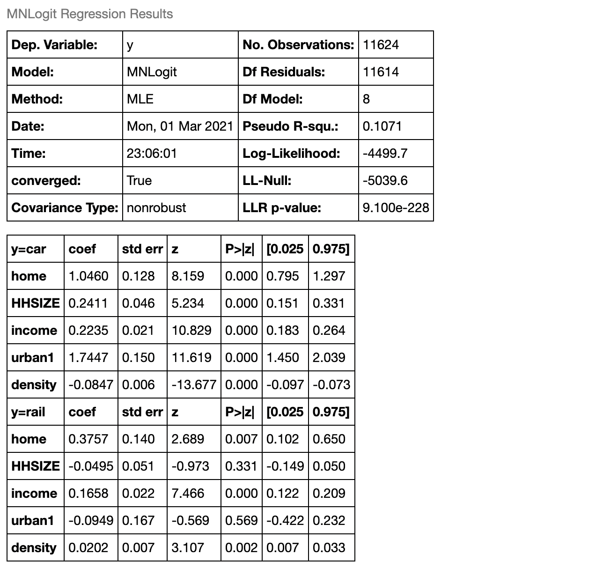

In The Century of Self Adam Curtis’ spiralling survey of the 20th century we’re shown how the Freud’s ideas seeped into public consciousness. How they were taken and deployed by ad-men and marketing gurus to sell our own initimated desires back to ourselves. There is a conceit of individuality and uniqueness - that our mind is our own and the choices we make are ours alone to know and learn from. We plot our own journies and cleave to their contours as if we can see the goal. The main players and places get reshuffled or recycled as we grow, the tale contorts and twists to our constant surprise. How then could we be so utterly predictable?
Revealed Preference: a Political Need
The hope of many marketers is that your individuality is irrelevant to your consumption. As long as you fall into an identifiable class of consumer, your habits can be exploited and directed. Your propensity to purchase might be inferred from the past behaviour of similar consumers. This slightly nefarious motivation obscures the audacity of the project. The notion that we can model and predict your behaviour based on estimating some unobserved or latent motivation is radical. It postulates a subjective measure of utility and aims to approximate those dimensions of your preferences. This is a theory that human motivations can be modeled and the question is how, not why.
In this blog post we’ll dig into some of the details of Daniel McFadden’s analyis of the BART transport system in San Francisco and the algorithmic approach he took to estimating the preferences of the San Francisco residents. He used this analysis to accurately predict the uptake in the rail-users within the city thereby showing that a sound understanding of the incentives and pressures on city infrastructure can lead to accurate predictions of citizenry.
But put aside the fears of conspiratorial manipulation, the task is hard and the measures of success are few and far between. More to the point, it is probably to our benefit as a society that some stability can be discerned from patterns of our behaviour. Policy research and politics more generally is based on the assumption that we ought to try and cater to the preferences of citizens. The question of how to discern those preferences is more urgent than how to market products. Representative democracies claim voting is revelatory while marketers maintain that consumption is a leading indicator but both are in the business of articulating need.
Latent Utility and Binary Preference
We’ll start, following the presentation of Christopher Adam’s Learning Microeconometrics, with a simple case of binary choice between goods \(A, B\).
Revealed Preference Axiom: If there are two choices, A and B, and we observe a person choose A, then her utility from A is greater than her utility from B.
We assume that the latent utility can be expressed as by the revealed preferences i.e. as the share or proportion of choices made by the customers. Some assumptions about the form of the utility distribution are crucial as our modeling efforts will go wrong if we know nothing about the latent utilities. The utility is some function of product and consumer’s properties, perhaps mostly driven by price
\[ utility = \mathbf{X'}\beta + v\]
and market share is an expression of that utility
\[ demand_A = utility_{A} > 0 \]
In a choice context we’re trying to determine if the implicit utility measure is sufficient to drive a purchase, and as such OLS models are inappropriate. This stems from the fact that we’re’trying to estimate a conditional probability over a binary choice not a unbounded continuous measure. The revealed preference assumption says that we can predict the purchase if the utility of the good is positive.
\[Pr(demand_A = 1) = utility > 0 \] \[= Pr(\mathbf{X'}\beta + v > 0) \] \[ = Pr(v > - \mathbf{X'}\beta ) \] \[ = 1 - F(\mathbf{X'}\beta ) \]
where \(F\) is the distribution of the unobserved random variable \(v\). The challenge is using the correct distribution as this feeds the method of statistical estimation of the parameters \(\beta\)
\[U\_{i,A} > U_{i, B} \]
just when
\[ \mathbf{X'}_{i, A}\beta + v_{i,A} > \mathbf{X'}_{i, B}\beta + v_{i,B}\]
or
\[ v\_{i,A} - v\_{i,B} > - (\mathbf{X'}_{i, A} - \mathbf{X'}_{i, B})\beta \]
but then the probability of demand is just
\[Pr(demand_A = 1 | \mathbf{X'}_{i, A}, \mathbf{X'}_{i, B}) \] \[ = Pr\Bigg( v_{i,A} - v_{i,B} > - (\mathbf{X'}_{i, A} - \mathbf{X'}_{i, B})\beta \Bigg) \] \[ = Pr\Bigg( -v_{i,A} - v_{i,B} < (\mathbf{X'}_{i, A} - \mathbf{X'}_{i, B})\beta \Bigg) \] \[ = F\Bigg( (\mathbf{X'}_{i, A} - \mathbf{X'}_{i, B})\beta \Bigg) \]
There are a number of candidate distributions that might serve our purposes we’ll look here at the logistic regression and probit binary classification modes.
Probit and Logit Regressions for Binary Choice
The probit and logit models are convenient distributions for modeling discrete choice. We’ll initialise some fake data and build two models over the \(X, y\) to infer the parameterisations that determined the utility driving of our choices. Note that we specify the distributions of the rror term differently for both models. In the probit case we say that the error term is normally distributed and in the logit case our error term is given a Weibull distribution.
N = 100
X_A = sm.add_constant(np.random.rand(N,2))
X_B = sm.add_constant(np.random.rand(N, 2))
beta = np.array([1, -2, 3])
#probit we only need one normal error term since sums of normals are normal
v = np.random.normal(0, 1, N)
y = (X_A.dot(beta) - X_B.dot(beta)) + v > 0
X_diff = X_A - X_B
X_diff[:, 0] = 1
X_diff = pd.DataFrame(X_diff, columns=['const',
'product_desc', 'product_desc1'])
# Fit Probit model
probit_mod = sm.Probit(y, X_diff)
probit_res = probit_mod.fit()
v1 = np.random.weibull(1, N)
v2 = np.random.weibull(1, N)
y = (X_A.dot(beta) - X_B.dot(beta)) + (v1 - v2) > 0
# Fit logit model
logit_mod = sm.Logit(y, X_diff)
logit_res = logit_mod.fit()The results are pretty good for both models - slightly better for the probit model in this case as the tails of the logit are wider. Both models discern the directionality and the correct magnitude of the parameters.
| Dependent variable:y | ||
| Probit Model | Logit Model | |
| (1) | (2) | |
| const | -0.255 | -0.049 |
| (0.156) | (0.246) | |
| product_desc | -1.491*** | -2.157*** |
| (0.445) | (0.690) | |
| product_desc1 | 2.964*** | 3.833*** |
| (0.578) | (0.888) | |
| Observations | 100 | 100 |
| R2 | ||
| Adjusted R2 | ||
| Residual Std. Error | 1.000 (df=97) | 1.000 (df=97) |
| F Statistic | (df=2; 97) | (df=2; 97) |
| Note: | p<0.1; p<0.05; p<0.01 | |
Maximum Likelihood Estimation and Multiple Choice
Under the hood these models are fit using the technique of maximum likelihood estimation, which searches the parameter space over each distribution to find a setting so that the observed data is most probable. For computational convenience this often means that we minimise the value of negative log likelihood over a variety of parameter settings.
def log_probit_dist(params, *args):
X, y = args[0], args[1]
beta = [params[0], params[1], params[2]]
mu, sd, = params[3], params[4]
Xb = X.dot(beta)
q = 2*y-1
log_lik = np.log(stats.norm.cdf(q*Xb))
return -sum(log_lik)
### Optimise the probit model for determining the parameters required to
### estimate the underlying utility
### True values of the parameters 2, 3, -4
res = minimize(log_probit_dist, x0 =[0, 0 ,0 , 0, 1],
args =(X, demand_A), options={'disp': True})But the situation is slightly more complex when we’re trying to optimise over multiple possible choices. Even with three choices, we have to both measure each latent utility metric as a structural equation and compare the demand for each product \(T, B, C\) against a specific reference product. In this case we’ll choose \(C\) if the utility exceeds that of \(B\) and \(C\).
\[ U_{i,T} = \mathbf{X'}\beta + v_{i,T} \] \[ U_{i,B} = \mathbf{X'}\beta + v_{i,B} \] \[ U_{i,C} = \mathbf{X'}\beta + v_{i,C} \] \[ Pr(y_C = 1 | \mathbf{X}_{i, C}, \mathbf{X}_{i, T}) = Pr\Big((v_{i, C} - v_{i, B} > - \mathbf{X'}_{i, C}\beta ) \\ \text{ and } v_{i, C} - v_{i, T} > - (\mathbf{X}_{i, C}\beta - \mathbf{X}_{i, T})^{'}\beta \Big) \]
For some appropriate probability distribution. This is a strong restriction called The Irrelevance of Independent Alternatives, it bakes in the notion that our preferences are consistent and transitive. If we prefer \(C\) to \(B\) and \(B\) to \(T\) then we ought to prefer \(C\) to \(T\) too. The benefit of the assumption is that it allows us to infer a utility ranking metric by computing all the pairwise alternatives to a given product. The mulinomial logit distribution is a convenient measure for discrete choice problems because it allows us to express our preference for each product on a 0-1 scale given by:
\[ Pr(y_C = 1 | \mathbf{X}_{i, C}, ... \mathbf{X}_{i, j}) = \dfrac{ exp(\mathbf{X'}\beta)_{i, C}}{1 + \sum_{i, j}^{j=N} exp(\mathbf{X'}\beta)_{i, j} } \]
which can be optimised for the best parameter fits through an maximum likelihood procedure as follows:
np.random.seed(100)
N = 1000
mu = [0,0]
rho = 0.1
cov = [[1, rho], [rho, 1]]
# u is N*2
u = np.random.multivariate_normal(mu, cov, 1000)
x1 = np.random.uniform(0, 1, size=(N,2)) #np.random.rand(N,2)
x2 = np.random.uniform(0, 1, size=(N,2)) #np.random.rand(N,2)
U = -1 + -3*x1 + 4*x2 + u
y = np.zeros(shape=(N, 2))
y[:,0] = ((U[:,0] > 0) & (U[:,0] > U[:,1]))
y[:,1] = (U[:,1] > 0 & (U[:,1] > U[:,0]))
W1 = pd.DataFrame({'x1':x1[:,0], 'x2':x2[:,0]})
W2 = pd.DataFrame({'x1':x1[:,1], 'x2':x2[:,1]})
y_full = np.ones(shape=(N*2,1))
class_1 = np.where(((U[:,0] > 0) & (U[:,0] > U[:,1])), 'class_1', 'class_0')
class_2 = np.where((U[:,1] > 0 & (U[:,1] > U[:,0])), 'class_2', 'class_0')
y_full = np.append(class_1, class_2)
W_full = sm.add_constant(W1.append(W2)).reset_index(drop=True)
def cdf(W, beta):
Wb = np.dot(W, beta)
eXB = np.exp(Wb)
eXB = eXB /eXB.sum(1)[:, None]
return eXB
def take_log(probs):
epsilon = 1e-20
return np.log(probs + epsilon)
def calc_ll(logged, d):
ll = d * logged
return ll
def ll_mn_logistic(params, *args):
y, W, n_params, n_classes = args[0], args[1], args[2], args[3]
beta = [params[i] for i in range(0, len(params))]
beta = np.array(beta).reshape(n_params, -1, order='F')
# Ensures fit against a reference class
beta[:,0] = [0 for i in range(0, n_params)]
## onehot_encode
d = pd.get_dummies(y, prefix='Flag').to_numpy()
probs = cdf(W, beta)
logged = take_log(probs)
ll = calc_ll(logged, d)
return -np.sum(ll)
n_params = 3
n_classes = 3
z = np.random.rand(3,3).flatten()
res = minimize(ll_mn_logistic, x0 =z, args =(y_full, W_full, n_params, n_classes),
options={'disp': True, 'maxiter':1000})The expressive power of these kinds of discrete choice model are to be admired. They map onto an innumerable range of practical problems in business, science and politics. So it is all the more important to be aware of their limitations when deploying them at scale. The independence assumption and the linear structure of the latent utility model is not innocent, they’re tantamount to very strong claims about the consistency and preference structure of the population. So long as we’re aware of this, the algorithms can be deployed profitably as sometimes consumers do have rational preferences - the challenge is modelling the considerations that go into their reasoning. It’s utterly useless to articulate preference over goods poorly described.
BART and Transportation policy.
The BART infrastructure in san Francisco was expensive to implement and such rail networks can have massive impacts on the face of a city, so it is important to evaluate the potential gains to the development. McFadden’s analysis phrased this question a choice over the available modes of transport, and sought to predict the future demand for rail based on other demographic factors. The idea is that house size, ownership, income and proximity to a rail network determine uptake.
| home | HHSIZE | income | urban1 | density | CHOICE | |
|---|---|---|---|---|---|---|
| 1 | 1.0 | 2 | 8.0 | False | 0.3 | car |
| 15 | 1.0 | 2 | 5.0 | True | 30.0 | rail |
| 17 | 0.0 | 3 | 5.0 | True | 3.0 | bus |
| 18 | 0.0 | 2 | 7.0 | True | 7.0 | car |
| 33 | 1.0 | 3 | 11.0 | True | 1.5 | car |
| … | … | … | … | … | … | … |
It’s hard to estimate demand for a new product directly, so instead he tried to develop a two step model which estimated the relative impact of the each of the demographic factors on rail use where there already existed some rail infrastructure and then project the demand as if the same conditions held throughout the city. The multinomial model fitted on parts of the city with existing infrastructure gives the following coefficient estimates for the demographic factors relative to a base choice of bus-transport.
no_rail = y_focus_nr[['home', 'HHSIZE', 'income', 'urban1', 'density', 'rail', 'CHOICE']].astype(float)
rail = y_focus_r[['home', 'HHSIZE', 'income', 'urban1', 'density', 'rail', 'CHOICE']].astype(float)
full = y_focus[['home', 'HHSIZE', 'income', 'urban1', 'density', 'rail', 'CHOICE']].astype(float)
MN_logit_mod_r = sm.MNLogit(np.array(rail['CHOICE']),
rail[["home","HHSIZE","income","urban1","density"]])
MN_logit_res_r = MN_logit_mod_r.fit()
MN_logit_res_r.summary()
nr_nd = no_rail
nr_nd['density'] = 0
nr_d = no_rail
nr_d['density'] = r['density'].mean()
full_d = full
full_d[full_d['rail'] == 0]['density'] = r['density'].mean()
#Predict full city uptake using model trained on rail data
res = MN_logit_res_r.predict(full.drop('rail', axis=1)).mean()
res = pd.DataFrame(res).T
res.columns = ['Bus', 'Car', 'Train']
res.round(3) * 100| Bus | Car | Train | |
|---|---|---|---|
| 0 | 2.7 | 88.5 | 8.8 |
As it turned out this estimate for rail uptake was almost perfect which raises the question: are we really predictable or was the model really lucky? There is an odd dynamic between economic models and normative behaviour - once one is formulated as an approximate theory of advantageous behaviour in a market, it seeps in the societal consciousness as we try to learn from it. In doing so we conform to a model and make it a better fit to the data. Jevon’s would observe this characteristic as early as 1871
The laws [of individual economic man’s behaviour] which we are about to trace out are to be conceived as theoretically true of the individual; they can only be practically verified as regards the aggregate transactions, productions and consumptions of a large body of people. But the laws of the aggregate depend of course upon the laws applying to individual cases. - quoted on pg 149 The World in the Model by Mary S. Morgan
McFadden’s work was exemplary and revolutionary. It showed a clear and principaled method for translating a theory of human motivation into a predictions of market movements. The results were perhaps a little fortunate, but the method is profoundly important. The hardwork and shoe-leather of testing numerous models against observation, trying to infer causal impact of the demographic factors all illustrated the right kind of scientific process - measurement, abstraction and forecast.
The discrete choice models have some particular limitations when applied to complex choices over price. Apart from the fact that consumers will often exhibit irrational preferences, price of a product is correlated with the random components of the utility measure. This can prevent proper estimation of the model without making some adjustments. We won’t dwell on the details here but it is enough to note that the urgency of the task is not diminished by the difficulty.
The Tension: Idealisation, Reality and Progress
The challenge of an economic model is to create a measure that abstracts over the particulars without doing violence to the participants. These models enter into a feedback loop of policy and practice. If we’re lucky our institutions learn from experimenting with these models and improve. If we’re not, the tired tropes become a calcified status quo which supports a fortunate few and quashes the concerns of the unrepresented. The models are always on a time-lag, optimised for past behaviour hoping to hold good in an uncertain future.
The most likely outcomes are always conditional on the underlying distribution and it is somewhat of an art how to properly specify each probability model: how to choose the dimensions to measure, which interaction effects are important, the parameters of the model? Your next action might be predictable if the modeler can adjust their expectations for the appropriate features, but even then you get lost in the mileau, swept up among the many. Even in the era of Big-Data, predictability is no substitute for understanding, no threat to individuality. The dynamics of the market move on and a once effective models decay… you’re a moving target. Keep moving, drag the models forward.